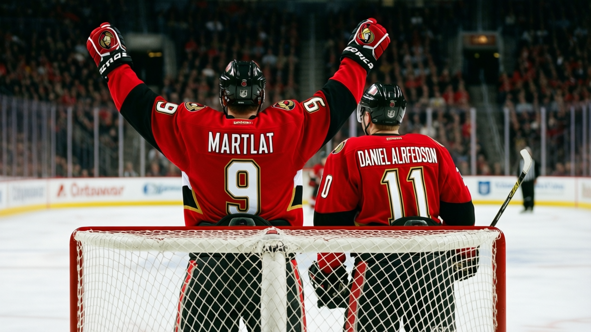

The Fastest Man Making $0.90M: Martin Havlat's last winter in Ottawa
The Czech winger carries the two highest physical grades in the Book, 54 points in 35 games, and a contract that expires in July.
 Tomáš VránaProfile writer · The Sweater
Tomáš VránaProfile writer · The Sweater Martin Havlat82 came from Mlada Boleslav, a town north of Prague where the rink sat next to the train yard and the boards were close enough to the ice that a player who hesitated lost a tooth. He played for the local Extraliga club until Ottawa took him 26th overall in the 1999 draft, then stayed home one more season before landing in Canada at 19 years old.
Martin Havlat82 came from Mlada Boleslav, a town north of Prague where the rink sat next to the train yard and the boards were close enough to the ice that a player who hesitated lost a tooth. He played for the local Extraliga club until Ottawa took him 26th overall in the 1999 draft, then stayed home one more season before landing in Canada at 19 years old.
Five winters on, the  Ottawa Senators winger carries the two highest physical grades in the Bureau's Book. 99 speed. 99 agility. 98 acceleration. Through 35 games this season he has 21 goals and 33 assists for 54 points. His contract pays $0.90M and expires in July. He is 23.
Ottawa Senators winger carries the two highest physical grades in the Bureau's Book. 99 speed. 99 agility. 98 acceleration. Through 35 games this season he has 21 goals and 33 assists for 54 points. His contract pays $0.90M and expires in July. He is 23.
What the grades describe
The top of Martin Havlat's attribute column reads like a scouting report on a different species of player. Speed 99, agility 99, acceleration 98. Shot power 95. Deke 92. Puck control 91. The Book says this man arrives at the blue line before the defenceman finishes turning and buries the puck before the goaltender resets. He does it all, every shift, 21 minutes a night.
The bottom says what the speed costs. 50 fight. 51 faceoff. 54 shot blocking. Every category that asks a player to stop moving and plant his feet sits near the floor. Strip the speed out and the column reads like a bottom-six winger's.
The year, measured
| Season | GP | G | A | P | MPG |
|---|---|---|---|---|---|
| 2003-04 | 48 | 25 | 25 | 50 | 21.5 |
| 2004-05 | 35 | 21 | 33 | 54 | 21.0 |
The goal rate holds. 21 in 35 games against 25 in 48, both near half a goal a game. The assist rate has nearly doubled. Last season produced 25 helpers in 48 games. This season has 33 in 35, more assists already with 13 fewer games on the board. The pace column reads 1.543 points per game.
His overall sits at 88, a base grade of 87 plus three on the Bureau's Development Index. The potential reads 86. The Book projected a ceiling below the level he is playing at right now, and is updating.
The road, the suspensions
Ottawa drafted Havlat out of the Czech Extraliga and let him stay home for a year. He joined the Senators for the 2000-01 NHL season at 19. By his third year he had back-to-back 20-goal campaigns and a run to the Eastern Conference Final, the deepest any Ottawa team had gone.
The fourth year carried baggage. Ken Hitchcock, then coaching Chicago, made a threat about a high-sticking incident involving Havlat. "Somebody is going to make him eat his lunch," Hitchcock said. Ottawa's winger was suspended twice that season, four games total. Once for kicking. Once for high-sticking. The fast kid from Mlada Boleslav was learning that the NHL regulates speed with a penalty box instead of a body check.
"You learn the difference between being quick and being reckless," Havlat has said this season, in the register of a young man who does not want to relitigate a suspension he served last year. "In the Czech league the ref talks to you after a bad hit. Here the ref writes it down and the league mails you a deduction."
The sheet says: two suspensions, four games, 51 penalty minutes last season, 43 so far this season.
The room and the record
 Daniel Alfredsson84 is the captain, 90 overall.
Daniel Alfredsson84 is the captain, 90 overall.  Marian Hossa81 is the other top winger at 87.
Marian Hossa81 is the other top winger at 87.  Patrick Lalime86 is in the net with a 92. The room is good enough to make a run: 14 wins against 14 losses and four overtime defeats, 38 points, fourth place in the Northeast.
Patrick Lalime86 is in the net with a 92. The room is good enough to make a run: 14 wins against 14 losses and four overtime defeats, 38 points, fourth place in the Northeast.
The captain has watched Havlat for five seasons. You do not call for a pass when that man is already past the defenceman, the kind of thing Alfredsson says about a winger he does not need to manage. The room trusts him because the speed does what the grade says it does, night after night.

Ottawa beat  Montreal Canadiens 5-3 on December 27, one of its 14 wins in a stretch that has seen the team trade victories and losses at an even rate. The season is past its midpoint. The standings put Ottawa 12 points behind
Montreal Canadiens 5-3 on December 27, one of its 14 wins in a stretch that has seen the team trade victories and losses at an even rate. The season is past its midpoint. The standings put Ottawa 12 points behind  New York Rangers for the next playoff spot, though the cross-division math is not the Senators' problem to solve on their own.
New York Rangers for the next playoff spot, though the cross-division math is not the Senators' problem to solve on their own.
What July looks like
A man with 99 speed and 99 agility and a pace of 1.543 points per game does not sign another deal at $0.90M. Either Ottawa extends him before the offseason or they lose him. If they lose him, they lose a 23-year-old whose speed grades are the highest the Bureau has printed and whose projected ceiling sat below the floor he is playing from.
If they extend him, they pay for the speed and hope the fight grade stays at 50, because those numbers are the cost of the other numbers and neither set changes. The contract runs out in July. He turns 24 in April. Ottawa sits fourth in the Northeast with 38 points.